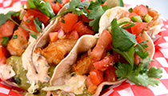
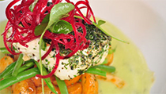

All of our products are 100% wild and harvested from the pristine coastal waters of British Columbia. We provide sustainable seafood that is flash frozen at sea ensuring premium quality products. Our products are Ocean Wise® approved which means they are recommended by the Vancouver Aquarium as an ocean friendly seafood choice.

Tempura Wild Rose Beer-Battered Lingcod & Coleslaw
2 12 oz lingcod fillets, cut into 3 oz portions, 350 mL Wild Rose Electric Avenue Golden Lager, 375 mL tempura flour, canola oil for frying, coleslaw for serving.
Directions for: Tempura Wild Rose Beer-Battered Lingcod & Coleslaw at foodnetwork.ca >>

Fish Tacos
18 1 ½ oz slices fresh lingcod, tempura batter, 2 L canola or vegetable oil, 18 fresh whole corn tortillas, 1 cup grated Monterey Jack cheese, ½ heads green cabbage, fresh tomato salsa, avo-tillo Sauce, chipotle mayo, 1 bunch cilantro, 6 limes.
Directions for: Fish Tacos at foodnetwork.ca >>

Halibut with Roasted Grape Tomato Salsa
4 pieces skinless halibut fillet, each fillet about 6-ounces/170 grams), coarse salt and freshly cracked black pepper, 1 Tbsp fresh thyme, grated zest of 1 lime, 2 tbsp olive oil (30 ml), lime wedges, 1 bunch watercress. 1 ½ cup grape tomatoes, cut in half (375 ml), 12 red pearl onions, blanched and peeled splash of olive oil, grated zest and juice of 1 lime, for salsa.
Directions for: Halibut with Roasted Grape Tomato Salsa at foodnetwork.ca >>

Olive-Oil Poached Halibut with Chipotle-Potato Salad and Gazpacho
4 (6-oz/170 g) fresh halibut, at least 3/4-inch thick, 2 cups (500 mL) + 1 Tbsp (15 mL) olive oil, salt and white pepper, 2 Tbsp (30 mL) chopped fresh parsley, 1 tbsp (15 mL) chopped fresh chives, mint-cucumber gazpacho, chipotle aioli, chipotle potato salad for serving.
Directions for: Olive-Oil Poached Halibut with Chipotle-Potato Salad and Gazpacho at foodnetwork.ca >>

Roast Sablefish
1 piece (150 g) sablefish, 2 piece baby leeks, 1 small watermelon radish, cut into 1 cm square cubes, 1 medium shiitake mushroom, 40 g chicken, 1 egg white, 100 g panko breadcrumbs, 1 whole egg, 2 tbsp all-purpose flour.
Directions for: Roast Sablefish at foodnetwork.ca >>

Sablefish Caramelized with Soy and Sake
4 fillets sablefish, 6-oz each, skin on, 1 ½ cup Soy-Sake Marinade, 10 oz green beans, 2 Tbsp unsalted butter, 2 cup canola oil for deep-frying, 4 Tbsp flour, pinch cayenne pepper, 4 shallots, thinly sliced on a mandolin, soy-sake marinade, orange-tamarind sause.
Directions for: Sablefish Caramelized with Soy and Sake at foodnetwork.ca >>